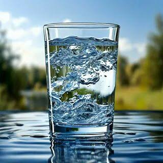
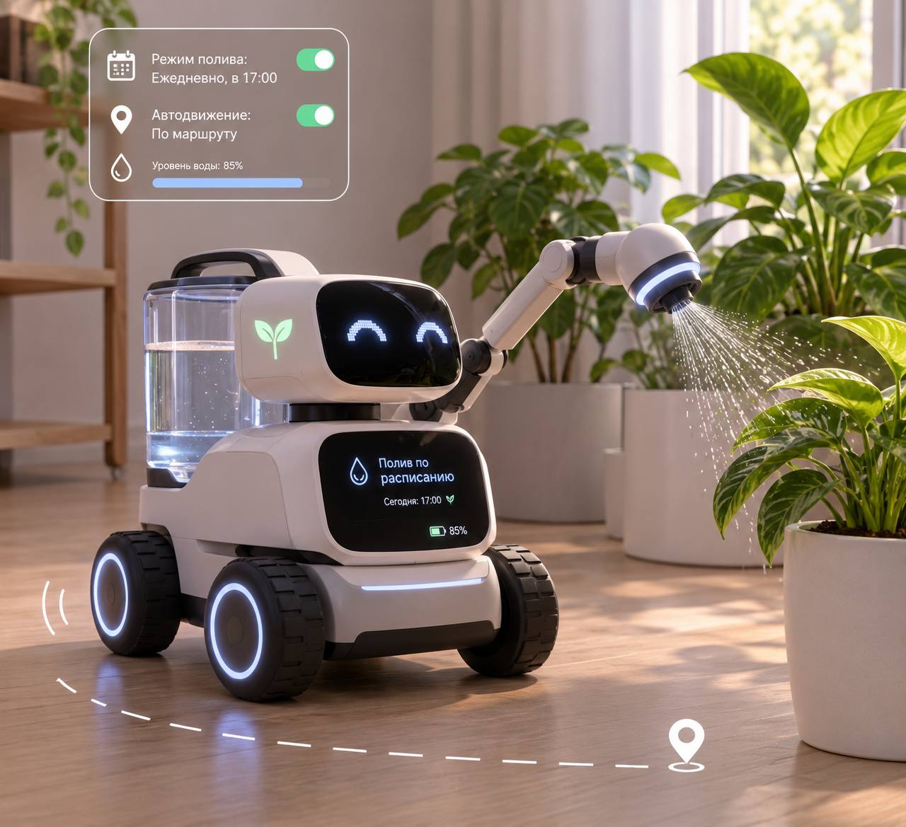

у пожилых людей может быть очень много различных проблем, но одни из самых частых и важных: одиночество, любовь крастениям но не имение возможности за ними ухаживать и стакан воды.
проблемы кажутся не очень важными для обращения внимания, но на самом деле для пожилых людей это является неотъемлимой частью жизни. для решения трех проблем есть разные варианты разных технологий в том числе и еще не сущуствующих. к примеру: для решения всех проблем может подойти нянька, но у пожилых может не хватать средств для этого или же няньки могут быть недобродушными людьми.
а вот первая технология для решения одной из проблем, а именно ЛЮБОВЬ К РАСТЕНИЯМ:
